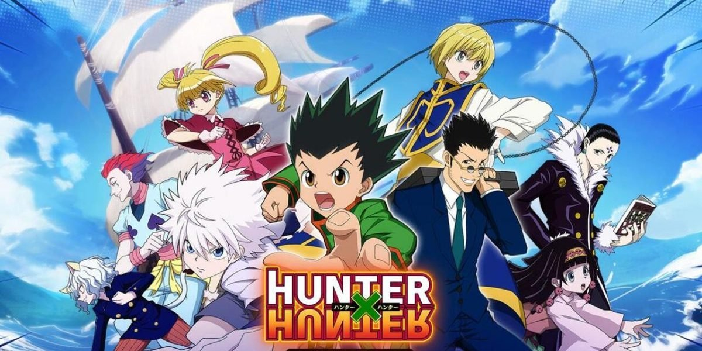

Gon Freecss a douze ans, et rêve de devenir hunter. Les hunters sont des citoyens d'élite autorisés à faire quasiment tout ce qu'ils souhaitent sur simple présentation de leur carte de membre. Son père, Ging Freecss, qu'il ne connaît pas directement, est considéré comme un des plus grands hunters de son temps. C'est aussi pour le retrouver que Gon veut devenir hunter.
Cependant l'examen de hunter, qui a lieu chaque année, est extrêmement difficile et périlleux. On dit qu'un candidat sur 10 000 arrive sur le lieu des épreuves et qu'un seul candidat tous les trois ans devient hunter à sa première tentative. Durant les épreuves, il n'est pas rare d'être blessé, voire tué par des monstres, des pièges ou même d'autres concurrents…
Au cours de cet examen, Gon va rencontrer différents personnages, aussi bien amis qu'ennemis : Kurapika; Léolio; Kirua, qui a le même âge que Gon; Hisoka; ainsi que beaucoup d'autres…
La force de Gon n'est pas que physique : son charisme, sa pureté, sa gentillesse, sa grande générosité et surtout son incroyable capacité à attirer la sympathie l'aident souvent à se sortir des situations les plus périlleuses.
Source 